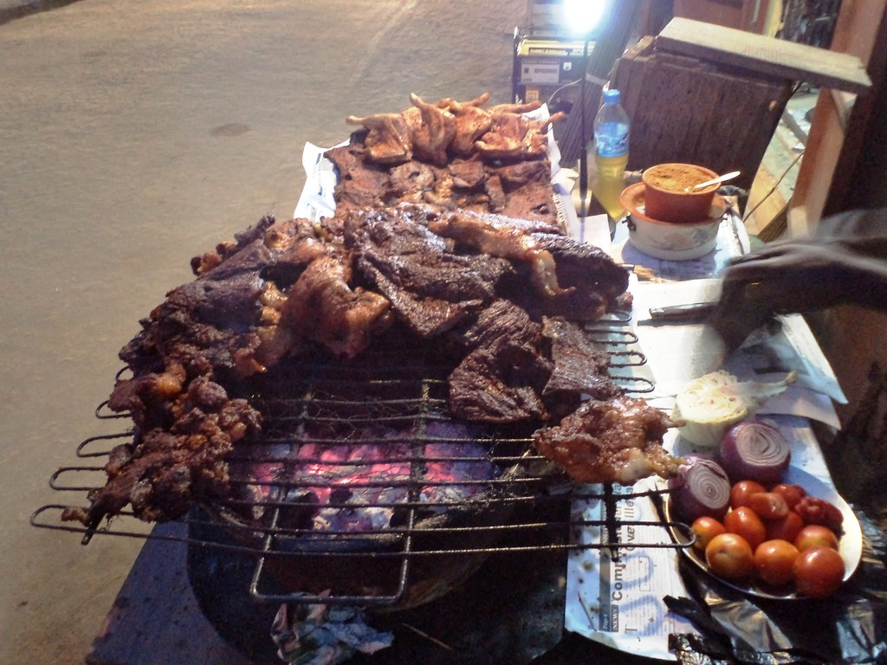
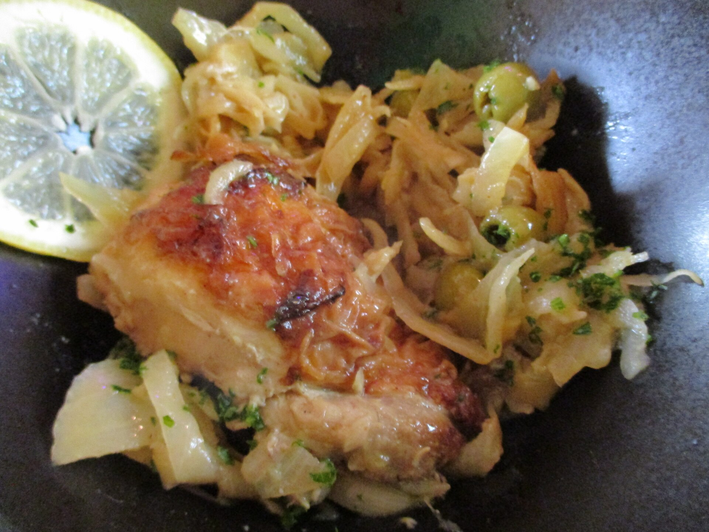
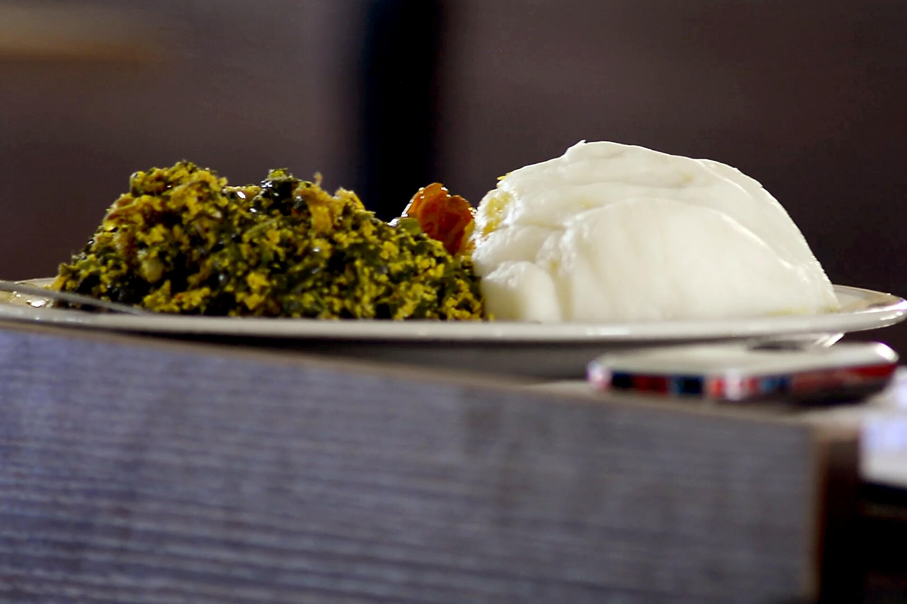
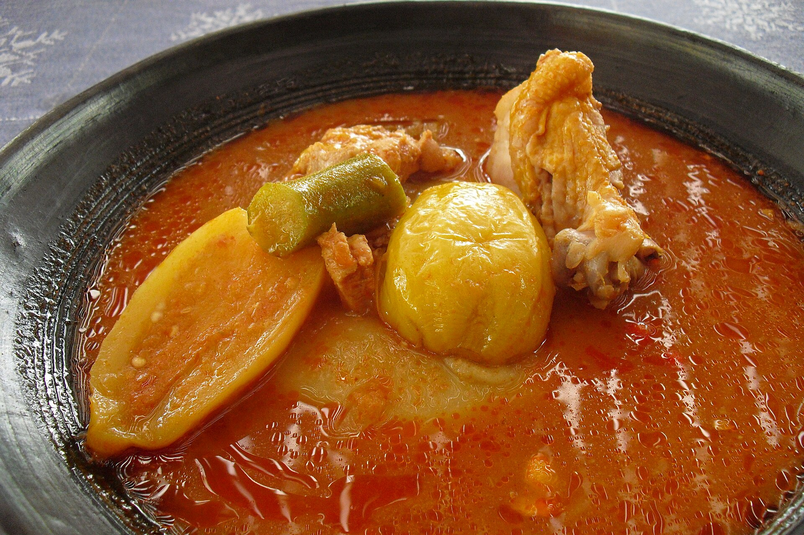

Scotch bonnet
A fruity, intensely hot chilli that gives stews and jollof their signature kick.
Bold, layered and generous — a cuisine of one-pot rice, pounded swallows and smoky street grills.
Stretching from the Atlantic coast of Senegal to the forests of Cameroon, West Africa is a region of bold, layered flavour. Meals are built around a hearty starch — rice, yam, cassava or millet — paired with a richly seasoned soup or stew. Heat comes from scotch bonnet peppers, colour and depth from red palm oil, and a deep savoury taste from fermented seasonings like dawadawa.
Food here is communal. A pot of jollof is the heart of every party, street-side grills perfume the evening air with suya, and families gather to share fufu and soup from a single bowl — traditionally eaten with the right hand.

Suya: West Africa's favourite street-side grill.
Boiled yam, cassava or plantain is pounded in a large mortar into smooth, stretchy 'swallows' such as fufu and pounded yam.
Rice is steamed directly in a reduced tomato-and-pepper base so every grain soaks up flavour — the secret of jollof.
Soups are thickened with ground egusi melon seeds, okra or groundnut paste for a rich, silky body.
Thin strips of beef are coated in yaji spice and grilled over charcoal — the art of suya.
The aromatics that give West Africa its unmistakable taste.
A fruity, intensely hot chilli that gives stews and jollof their signature kick.
Peppery, citrusy seeds once traded across the Sahara as 'Guinea pepper'.
Fermented locust beans — West Africa's original umami seasoning.
Ground peanuts blended with chilli, ginger and garlic for grilled meats.
Adds a vivid orange colour and earthy richness to soups and stews.
Smoky, musky pods used in pepper soup and Senegal's café Touba.
Cards marked Full recipe link to step-by-step instructions.
 West Africa
West Africa
Smoky, tomato-rich rice cooked in one pot — the undisputed star of every West African celebration.

West AfricaChicken marinated in lemon and mustard, then simmered with mountains of caramelised onions.

West AfricaA rich, nutty soup thickened with ground melon seeds and simmered with leafy greens.
Thin beef skewers rubbed in fiery peanut yaji spice and grilled over open flames.

West AfricaA soft, stretchy 'swallow' of pounded cassava and plantain, used to scoop up soups.
Join National Geographic for 24 hours of eating in Dakar, Senegal — from thieboudienne to street-side snacks.
Continue your journey: